Фибула
accessory:brooch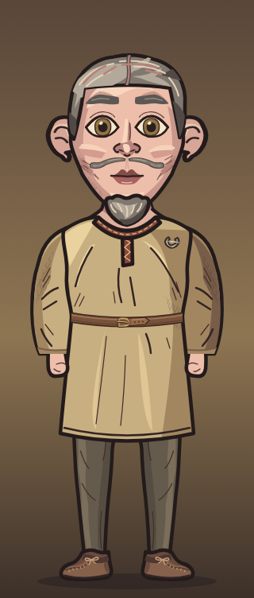
32 × 32
До и после
—
Фибула или штифтовая застёжка плаща
ad_ac015 32 × 32
До и после
—
Кольцевидная/подковообразная застёжка приезжего западного или северного круга
ad_ac016 32 × 32
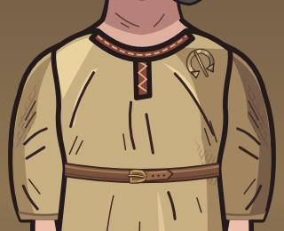
До и после
Ирландская находка XII–XIII вв. подходит по кольцевой форме, но её контекст не новгородский.
Нательный крест
ad_ac017 32 × 32
До и после
—
Крест-энколпион
ad_ac018 32 × 32
До и после
—
Лунничная подвеска
ad_ac019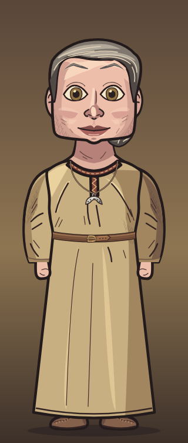
32 × 32
До и после
Лунницы из Пеклинских курганов датированы X–XII веками и старше целевого среза 1200–1250 годов.
Ожерелье из бус
ad_ac020 32 × 32
До и после
Низка IX–XIII вв. имеет указанное в карточке ближневосточное место создания, поэтому это аналог импортных бус, а не новгородский набор.
Серьги или височные кольца
ad_ac021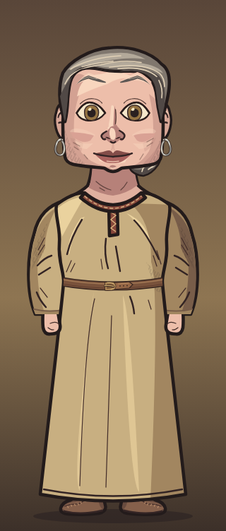
32 × 32
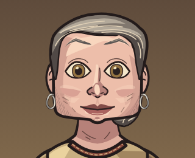
До и после
—
Спиральные височные/волосяные украшения пограничных групп
ad_ac022 32 × 32
До и после
—
Браслет
ad_ac023 32 × 32
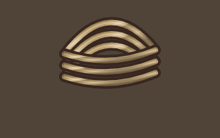
До и после
—
Перстень или кольцо
ad_ac024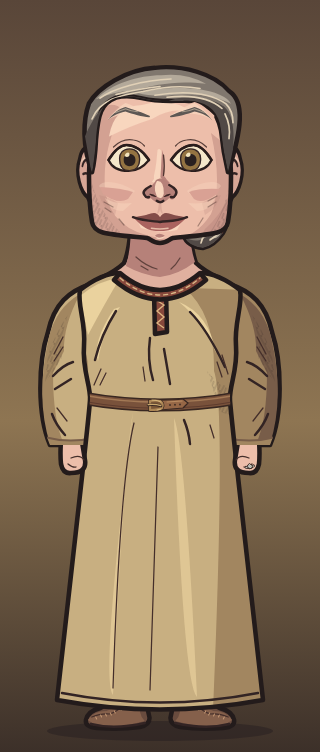
32 × 32
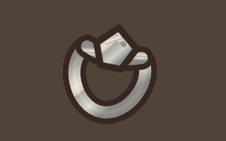
До и после
Длинные булавки, соединённые цепочкой
ad_ac028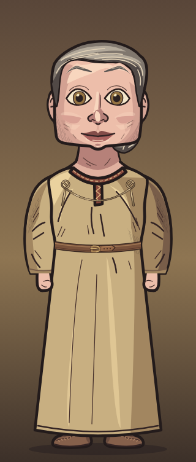
32 × 32
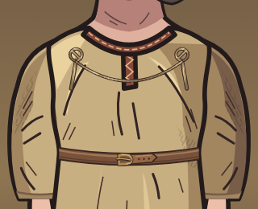
До и после
В сообщении находка датирована концом XII — началом XIII века, но на снимке не видна вся пара булавок и их соединение цепью.
Небольшая амулетная подвеска
ad_ac041 32 × 32
До и после
Новгородская находка XII века совпадает по материалу и назначению, но это крупная антропоморфная фигурка.
Балто-финская шейная гривна
ad_fr006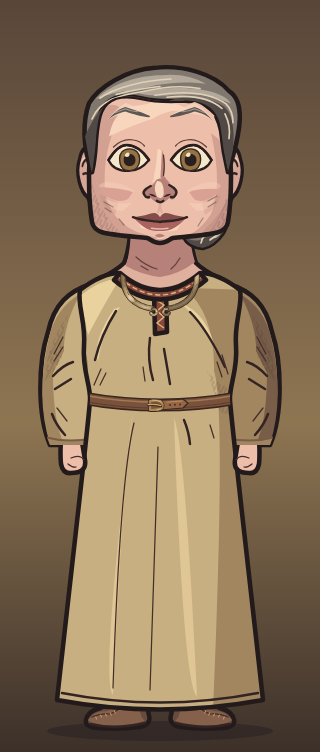
32 × 32
До и после
Гривна найдена в Драмино, Поморье, и датирована 950–1000 годами; балто-финская атрибуция не установлена.
Пластинчатый браслет балто-финского/балтийского круга
ad_fr007 32 × 32
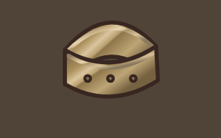
До и после
Изображены новгородские браслеты XI–XIII веков; принадлежность именно к балто-финскому или балтийскому кругу не установлена.
Скандинавская/готландская кольцевая брошь
ad_fr008 32 × 32
До и после
Готландская находка датирована 800–1100 годами и старше новгородских кольцевидных фибул XII–XIII веков.
Янтарные бусины, крестики и привески
ad_new_amber_pendant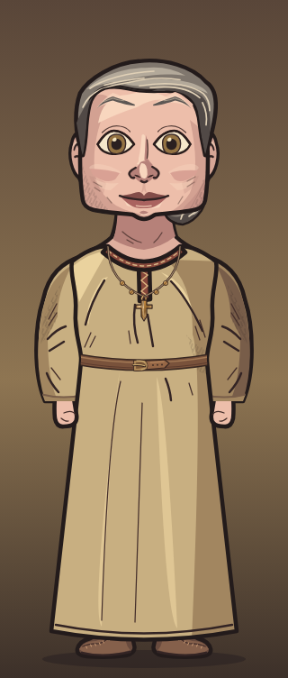
32 × 32
До и после
Подвеска из Поморья датирована примерно 1050–1200 годами; X-образный тип и русское происхождение не совпадают с неподтверждённым вариантом.
Костяная пуговица ворота рубахи
ad_new_collar_button_bone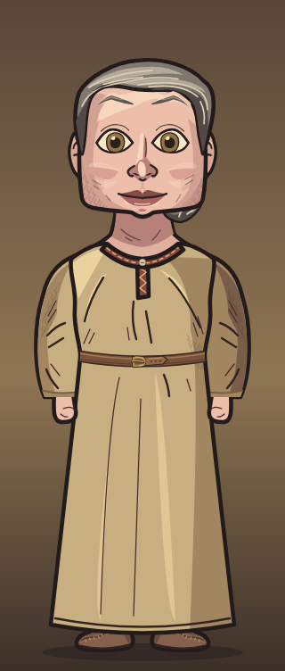
32 × 32
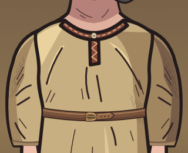
До и после
Археологическая находка из Большого Лондона датирована 1300–1500 годами, позже и западнее древнерусского периода IX–XIII веков.
Литая бронзовая пуговица ворота рубахи
ad_new_collar_button_bronze 32 × 32
До и после
Английская пуговица датирована 1230–1450 годами; её воротное назначение и материал именно бронза не подтверждены.
Стеклянный браслет
ad_new_glass_bracelet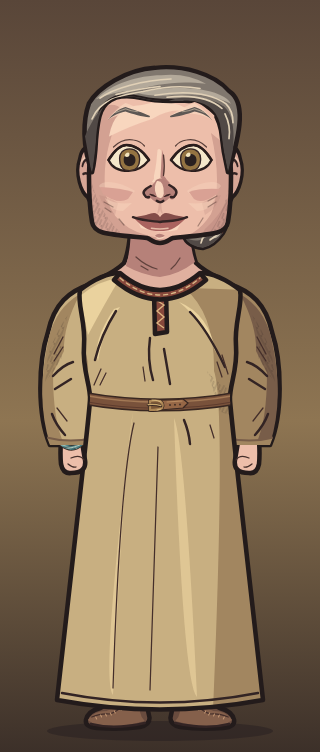
32 × 32
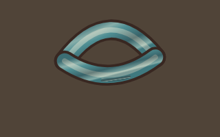
До и после
Крест-энколпион
it_ps_encolpion 32 × 32
До и после
—
Малый колокольчик-бубенчик
it_ps_hand_bell 32 × 32
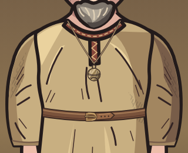
До и после
Новгородские археологические бубенчики разных форм, XII — начало XIV вв.; показана одна простая форма.
Нательный крест
it_ps_pectoral_cross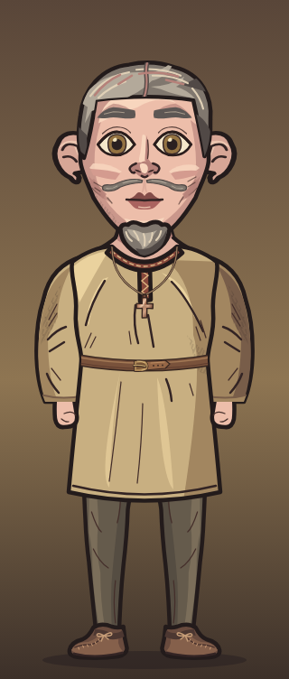
32 × 32
До и после
—
Паломнический знак (западный импорт)
it_ps_pilgrim_badge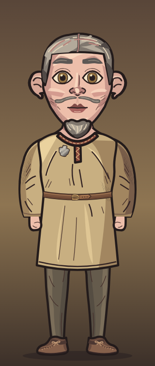
32 × 32
До и после
Новгородская находка датирована 1270-ми гг., позже целевого периода; центр производства — Фессалоники.
Каменная нательная иконка
it_ps_stone_icon 32 × 32
До и после
Новгородские иконы датированы рубежом XIII–XIV вв.; ношение именно как нагрудных подвесок источник не подтверждает.
Змеевик-амулет литой медный (нательная подвеска)
it_ps_zmeevik 32 × 32
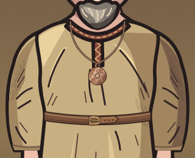
До и после
—
Нательный крест
jewelry:cross 32 × 32
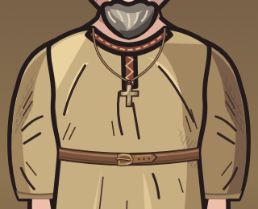
До и после
Это псковская подборка с разными типами и датировками X–XVII вв., поэтому она показывает лишь северо-западный пример общего предмета.
Разноцветные стеклянные бусы
jewelry:glass_beads 32 × 32
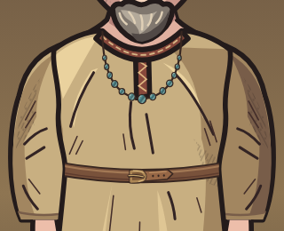
До и после
Новгородский пример XI–XV вв. показывает русскую разновидность, а не все заявленные региональные традиции бус.
Подвеска
accessory:pendant 32 × 32
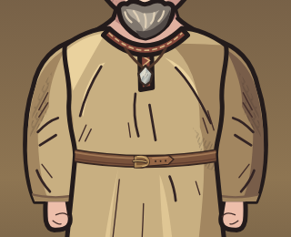
На фото показаны местные русские формы X–XV вв., а не конкретный тип для всех перечисленных культур.
Колт — редкое элитное женское украшение
ad_ac025 32 × 32
До и после
Киевский клад датирован первой половиной XII века, раньше целевого периода 1200–1250 гг.
Подвески рясен
ad_ac026 32 × 32
До и после
Экспонат датирован концом XI века, раньше целевого периода 1200–1250 гг.
Золотая эмалевая подвеска-квадрифолий
ad_ac027 32 × 32
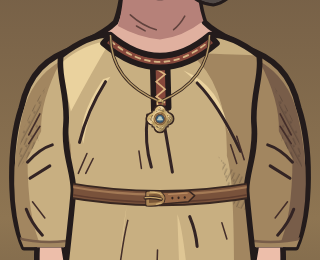
До и после
Ромбощитковое височное кольцо новгородского типа
ad_new_shield_temple_ring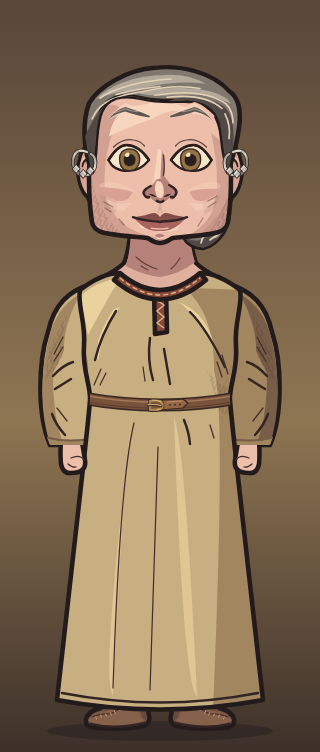
32 × 32
До и после
Фрагменты датированы IX–X вв., раньше целевого периода; тип и новгородская традиция соответствуют.
Золотой четырёхлистник с синей эмалью
jewelry:quadrifoil 32 × 32
До и после
Поясной кошель
accessory:pouch 32 × 32
32 × 32
Конёк со звенящими подвесками
jewelry:noisy_horse 32 × 32
До и после
Показанные находки относятся преимущественно ко второй половине XIII–XIV векам, позже целевого периода.